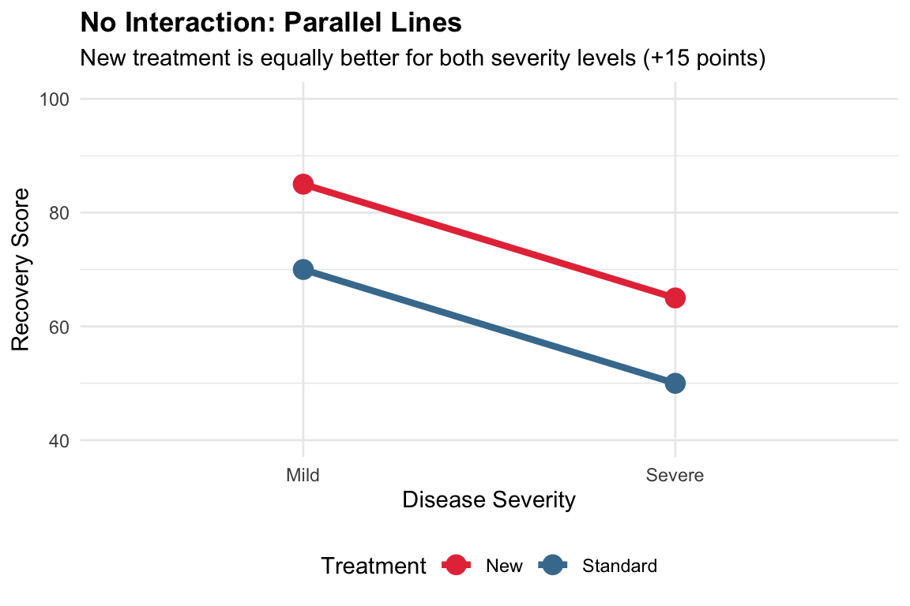
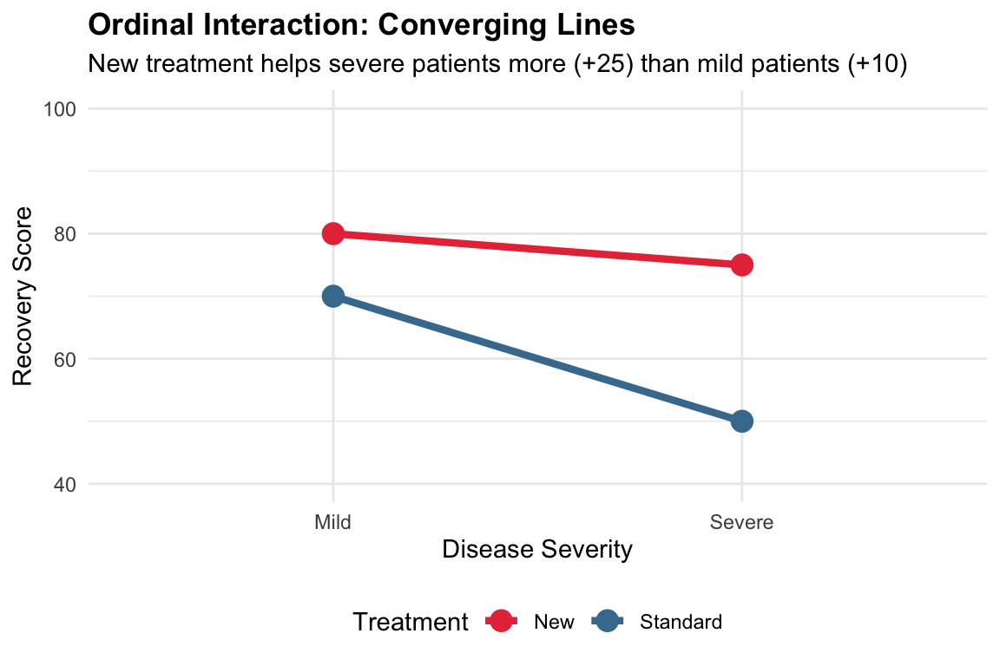
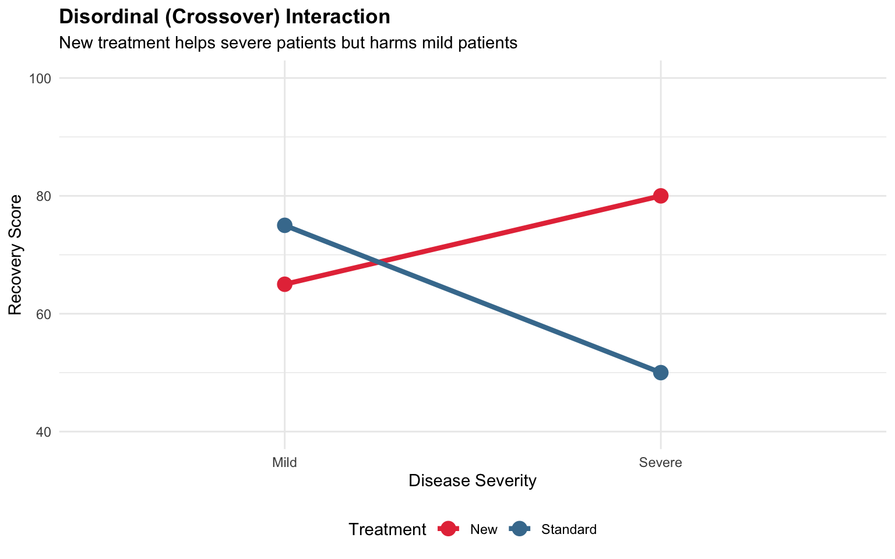
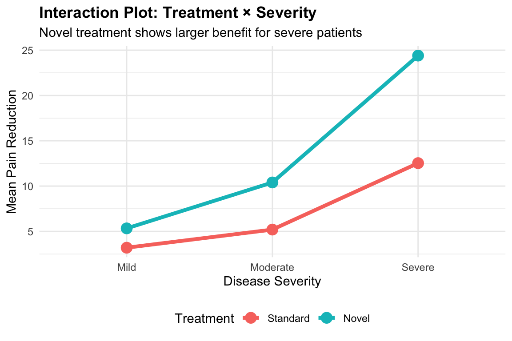
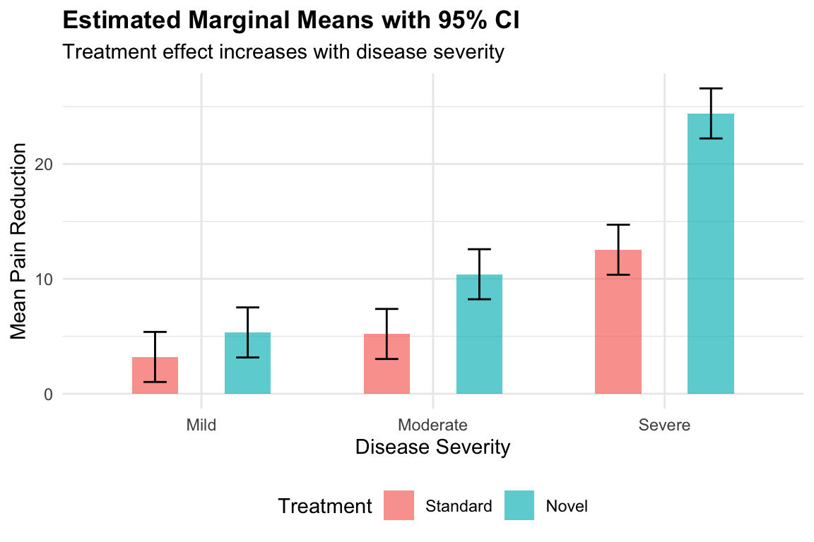
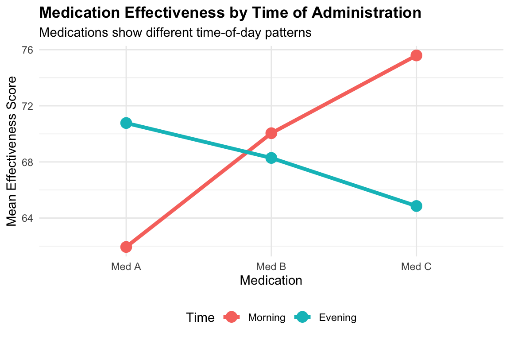
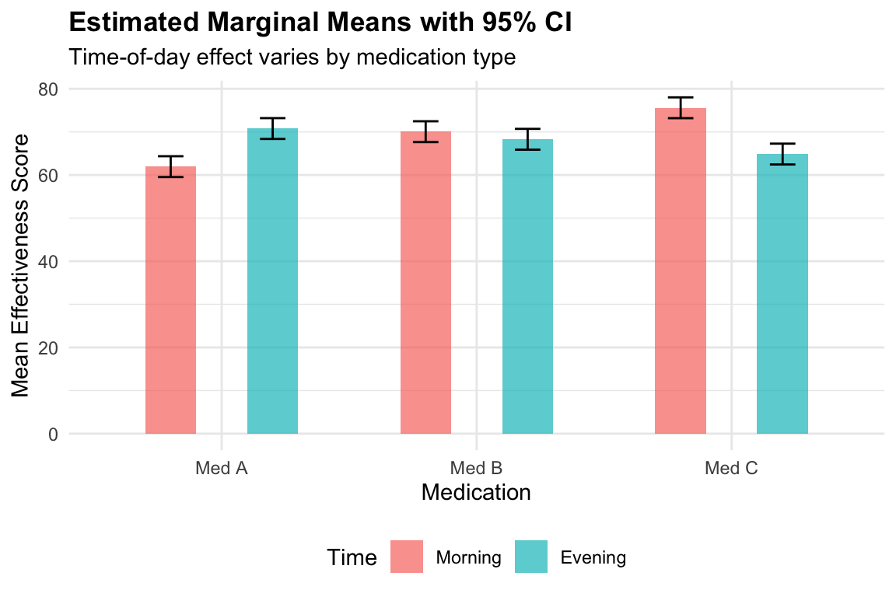
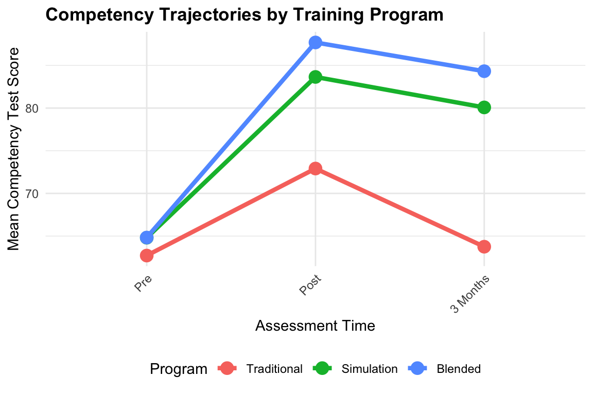
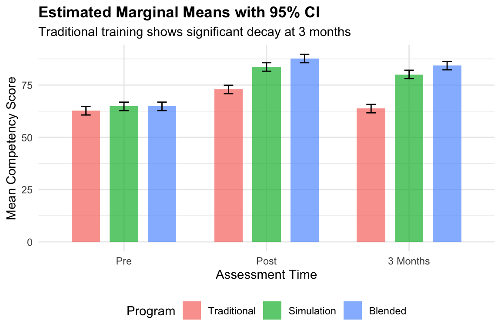

ANOVA 2: Two-Way ANOVA
MBA642: Business Analytics in Healthcare Management
Where We Left Off
Last week, we learned two ANOVA designs for comparing means across three or more groups:
One-Way ANOVA:
aov(y ~ x)to test whether group means differ across 3+ independent groups. Post-hoc:emmeans()andpairs().Repeated-Measures ANOVA:
aov(y ~ x + Error(id/x))to compare means when the same subjects were measured under multiple conditions. TheError()term accounted for individual differences.
Both designs examined the effect of one factor at a time. But in healthcare, outcomes are rarely influenced by a single factor. A training program might work well for novice nurses but not experienced ones. A medication might help patients with mild disease but not severe disease.
This week, we extend ANOVA to examine two factors simultaneously:
- Does the effect of one factor depend on the level of another factor?
Introduction to Two-Way ANOVA
What is Two-Way ANOVA?
Understanding “One-Way” vs. “Two-Way”
In ANOVA, the term “way” refers to the number of independent variables (or factors) we are examining:
- One-Way ANOVA: Analyzes the effect of one factor on an outcome
- e.g., Does patient satisfaction differ across 4 hospital departments?
- Factor: Department (4 levels: Emergency, Cardiology, Orthopedics, Oncology)
- Outcome (or dependent variable): Satisfaction score
- Two-Way ANOVA: Analyzes the effects of two factors simultaneously on an outcome
- e.g., Does pain reduction depend on both treatment type AND disease severity?
- Factor A: Treatment (2 levels: Standard, New)
- Factor B: Severity (3 levels: Mild, Moderate, Severe)
- Outcome (or dependent variable): Pain reduction score
Why Study Two Factors Simultaneously?
As a healthcare manager, you rarely make decisions based on just one variable; you want to know how multiple factors work together to affect outcomes.
Consider this scenario:
You invest $500,000 in a new nurse training program, and the overall competency score improves by 5 points. Sounds like a success until you discover it boosted novice nurses’ scores by 15 points but decreased expert nurses’ scores by 5 points.
A one-way ANOVA would only show the modest average improvement. Two-way ANOVA would have revealed this pattern before hospital-wide rollout.
Similarly, an intervention effective in urban hospitals may fail in rural settings. A medication safe for one age group may cause adverse effects in another. These are all interaction effects, the most important concept in this lecture.
Two-way ANOVA allows us to test three things simultaneously:
- Test the effect of Factor A (main effect of A, e.g., intervention type)
- Test the effect of Factor B (main effect of B, e.g., disease severity)
- Test whether the effect of A depends on B (interaction effect A × B, e.g., intervention type × disease severity)
Main Effects vs. Interaction Effects
Main Effects
A main effect is the overall effect of one factor, averaging across all levels of the other factor.
- Main effect of Treatment: Does the treatment affect outcomes, regardless of patient group?
- Main effect of Patient Group: Do patient groups differ in outcomes, regardless of treatment?
Interaction Effect
An interaction effect occurs when the effect of one factor depends on the level of another factor.
- The new drug works well for younger patients but not for older patients
- The training program improves performance for novice nurses (work experience < 2 years) but not experienced nurses (work experience 2+ years)
When an interaction is present, main effects can be misleading! If a drug helps one group but harms another, the “average” effect might be zero.
Overview of Two-Way ANOVA Designs
| Design | Factor A | Factor B | Example |
|---|---|---|---|
| Between-Subjects | Different subjects | Different subjects | Treatment type × Patient severity |
| Within-Subjects | Same subjects | Same subjects | Drug type × Time of day |
| Mixed Design | Different subjects | Same subjects | Training program × Assessment time |
Understanding Interaction Patterns
Visualizing Interactions
The easiest way to understand interactions is through interaction plots, where we plot the mean outcome for each combination of factors.
How to Read an Interaction Plot
An interaction plot has the following structure:
- X-axis: Shows the levels of one factor (e.g., Disease Severity: Mild, Severe)
- Y-axis: Shows the mean outcome (e.g., Mean Recovery Score)
- Lines: Each line represents one level of the other factor (e.g., one line for Standard treatment, another for New treatment)
- Points: Each point represents the mean outcome for a specific combination of both factors
The key question is: Are the lines parallel or not?
- Parallel lines → No interaction (the effect of one factor is consistent across levels of the other)
- Non-parallel lines → Interaction present (the effect of one factor changes depending on the other)
Let’s look at three common patterns:
Pattern 1: Parallel Lines (No Interaction)
- When there is no interaction, the effect of one factor is the same across all levels of the other factor. The lines in the interaction plot are parallel.
- Interpretation: The new treatment improves outcomes by 15 points for both mild and severe patients. The treatment effect is consistent regardless of severity.
Pattern 2: Ordinal Interaction (Converging/Diverging Lines)
- In an ordinal interaction, the lines converge or diverge but do not cross. The effect of one factor is larger at some levels of the other factor, but the direction is the same.

- Interpretation: The new treatment helps both groups, but it helps severe patients much more (+25 points) than mild patients (+10 points). The treatment is beneficial for everyone, but especially more effective for those with severe disease.
Pattern 3: Disordinal (Crossover) Interaction
- In a disordinal (or crossover) interaction, the lines cross. The effect of one factor reverses direction at different levels of the other factor.

- Interpretation: The new treatment helps severe patients (+30 points) but harms mild patients (-10 points). The main effect of treatment might appear small or non-significant because the positive and negative effects cancel each other out.
Why Interactions Matter in Healthcare
Understanding interactions is important in healthcare management because:
- Personalized medicine: Treatment effectiveness often varies by patient characteristics
- Resource allocation: Interventions may work better in some settings or groups than others
- Safety: A treatment safe for one population may be harmful for another
- Policy decisions: Program effectiveness may depend on implementation context
1. Two-Way Between-Subjects ANOVA
What is it?
A two-way between-subjects ANOVA tests the effects of two independent variables (factors) on a continuous dependent variable, where different participants are in each combination of factor levels.
Key Characteristics
- Two factors (each with 2 or more levels)
- Each participant is in only one cell of the design
- Tests three effects: Main effect A, Main effect B, A × B interaction
When to Use It
Use a two-way between-subjects ANOVA when you have two categorical factors and each individual is assigned to only one combination of conditions. Common healthcare scenarios include:
Comparing treatment types (e.g., medication A vs. B vs. C) across patient demographics (e.g., age groups, gender) → outcome: pain scores, recovery time, readmission rates
Evaluating interventions (e.g., telehealth vs. in-person discharge planning) across facility types (e.g., academic medical centers, community hospitals) → outcome: length of stay, patient satisfaction, 30-day readmission rates
Assessing training programs (e.g., lecture, simulation-based, blended learning) across staff experience levels (e.g., novice, intermediate, expert) → outcome: competency scores, error rates, time to task completion
Scenario: Treatment × Disease Severity
A clinical trial compares two treatments for chronic pain across three severity levels.
Treatments:
- Standard Care: Physical therapy referrals, over-the-counter pain relievers, and patient education (~$800 per patient)
- Novel Multimodal Treatment: Cognitive Behavioral Therapy (CBT) for pain, targeted exercise programs, and a non-opioid prescription medication (~$3,200 per patient).
Administrators need to know whether the additional cost is justified—and for which patients.
Severity Levels:
- Mild: Pain rating 1-3; does not significantly interfere with daily activities
- Moderate: Pain rating 4-6; interferes with some daily activities
- Severe: Pain rating 7-10; significantly limits daily functioning
Outcome Variable: Pain reduction score (0-100, higher = better reduction after 12 weeks)
Research suggests treatment effectiveness often varies by severity. Mild-pain patients may improve with any treatment, while severe-pain patients often require multimodal approaches. If the novel treatment only benefits severe patients, prescribing it for everyone would be wasteful.
Research questions we want to understand are:
- Does the novel multimodal treatment reduce pain more than standard care (main effect of treatment)?
- Does pain reduction vary by baseline severity (main effect of severity)?
- Does the treatment effect depend on severity level (interaction)?
The Formula
Two-way ANOVA partitions variance into four components:
\[SS_{total} = SS_A + SS_B + SS_{A \times B} + SS_{error}\]
Conceptually, each component captures a different source of variation:
- \(SS_A\): How much Factor A group means differ from the grand mean (variation due to Factor A)
- \(SS_B\): How much Factor B group means differ from the grand mean (variation due to Factor B)
- \(SS_{A \times B}\): How much cell means differ from what the main effects alone would predict (variation due to the interaction)
- \(SS_{error}\): Individual differences within groups not explained by either factor or their interaction
Three F-statistics are calculated:
\[F_A = \frac{MS_A}{MS_{error}}, \quad F_B = \frac{MS_B}{MS_{error}}, \quad F_{A \times B} = \frac{MS_{A \times B}}{MS_{error}}\]
The degrees of freedom:
- Factor A: \(df_A = a - 1\)
- Factor B: \(df_B = b - 1\)
- Interaction: \(df_{A \times B} = (a-1)(b-1)\)
- Error: \(df_{error} = N - ab\)
Where
- \(a\) = levels of A
- \(b\) = levels of B
- \(N\) = total sample size.
Demonstration: Treatment × Disease Severity
Let’s load the dataset and examine summary statistics.
# Pain reduction scores for 2 treatments × 3 severity levels
pain_data <- read.csv("https://raw.githubusercontent.com/mba642-spring-26/mba642-spring-26.github.io/refs/heads/main/datasets/week07_pain_data.csv")
pain_data <- pain_data %>%
mutate(
severity = factor(severity, levels = c("Mild", "Moderate", "Severe")),
treatment = factor(treatment, levels = c("Standard", "Novel"))
)| Treatment | Severity | Mean | SD |
|---|---|---|---|
| Standard | Mild | 3.2 | 3.3 |
| Standard | Moderate | 5.2 | 4.0 |
| Standard | Severe | 12.5 | 3.2 |
| Novel | Mild | 5.3 | 4.9 |
| Novel | Moderate | 10.4 | 4.5 |
| Novel | Severe | 24.4 | 5.5 |
Visualizing the Data
Code
# Step 1: Create summarized dataset
pain_means <- pain_data %>%
group_by(treatment, severity) %>%
summarise(mean = mean(pain_reduction), .groups = "drop")
# Step 2: Create interaction plot
p1 <- ggplot(pain_means, aes(x = severity, y = mean, color = treatment, group = treatment)) +
geom_line(linewidth = 1.5) +
geom_point(size = 4) +
labs(title = "Interaction Plot: Treatment × Severity",
subtitle = "Novel treatment shows larger benefit for severe patients",
x = "Disease Severity", y = "Mean Pain Reduction",
color = "Treatment") +
theme_minimal() +
theme(plot.title = element_text(face = "bold"),
legend.position = "bottom")
p1
Conducting Two-Way Between-Subjects ANOVA in R
Visually, we can understand that the novel treatment works better for severe patients. Now, let’s conduct a two-way between-subjects ANOVA to test the statistical significance of these effects.
The R formula for a two-way between-subjects ANOVA uses the * operator to specify both main effects and the interaction:
aov(outcome ~ factorA * factorB, data = dataset)The * is shorthand for “main effects plus interaction.” Writing treatment * severity is equivalent to writing treatment + severity + treatment:severity. Notice that unlike repeated-measures ANOVA from Week 6, there is no Error() term here because each participant appears in only one condition, so there is no need to account for repeated measurements on the same person.
Hypotheses
We are testing three sets of hypotheses simultaneously:
- Main effect of treatment:
- \(H_0\): Mean pain reduction is equal across treatment types (averaging over severity)
- \(H_A\): At least one treatment mean is significantly different from the others
- Main effect of severity:
- \(H_0\): Mean pain reduction is equal across severity levels (averaging over treatments)
- \(H_A\): At least one severity level mean is significantly different from the others
- Interaction:
- \(H_0\): The effect of treatment is the same at every severity level
- \(H_A\): The effect of treatment depends on severity level
# Two-way ANOVA
anova_pain <- aov(pain_reduction ~ treatment * severity, data = pain_data)
summary(anova_pain) Df Sum Sq Mean Sq F value Pr(>F)
treatment 1 922 921.6 49.72 4.62e-10 ***
severity 2 3279 1639.5 88.45 < 2e-16 ***
treatment:severity 2 371 185.7 10.02 0.000125 ***
Residuals 84 1557 18.5
---
Signif. codes: 0 '***' 0.001 '**' 0.01 '*' 0.05 '.' 0.1 ' ' 1Interpreting the ANOVA Table
The ANOVA table columns (review from Week 6):
- Df: Degrees of freedom
- Sum Sq: Variation attributable to each source
- Mean Sq: \(SS / df\)
- F value: Ratio of the effect’s Mean Square to the error Mean Square
- Pr(>F): The p-value
The output shows three F-tests:
- treatment: Does pain reduction differ between treatments, averaging across severity?
- severity: Does pain reduction differ across severity, averaging across treatments?
- treatment:severity: Does the treatment difference vary across severity levels?
Results interpretation:
- Main effect of treatment: Significant (p < 0.05). On average, pain reduction differs between the two treatment groups.
- Main effect of severity: Significant (p < 0.05). On average, pain reduction differs across severity levels.
- Interaction (treatment:severity): Significant (p < 0.05). The treatment effect is not uniform—it differs depending on the patient’s severity level.
When Interaction is Significant
- Important: Do Not Interpret Main Effects in Isolation When the Interaction is Significant!
When the interaction is significant, the main effects can be misleading. The main effect tells us the average treatment difference collapsed across severity, but the interaction tells us this average doesn’t represent what’s actually happening—the Novel treatment’s advantage is small for mild patients (~2 points) but large for severe patients (~12 points).
An administrator who only looked at the main effect might conclude “the Novel treatment is better for everyone.” The interaction reveals the $2,400 extra cost may not be justified for mild cases but is clearly worthwhile for severe cases.
When the interaction is significant, examine simple effects to understand the pattern.
Simple Effects Analysis (post-hoc analysis)
Simple effects examine the effect of one factor at each level of the other factor. We use the emmeans package for this analysis.
# Get estimated marginal means
emm <- emmeans(anova_pain, ~ treatment | severity)
# Simple effects: treatment effect at each severity level
pairs(emm, adjust = "tukey")severity = Mild:
contrast estimate SE df t.ratio p.value
Standard - Novel -2.13 1.57 84 -1.357 0.1784
severity = Moderate:
contrast estimate SE df t.ratio p.value
Standard - Novel -5.20 1.57 84 -3.308 0.0014
severity = Severe:
contrast estimate SE df t.ratio p.value
Standard - Novel -11.87 1.57 84 -7.548 <0.0001Interpreting Simple Effects
The output shows the treatment difference (Standard minus Novel) at each severity level. A negative estimate means Novel produces higher scores:
- Mild: Modest improvement; not statistically significant.
- Moderate: Larger improvement; statistically significant.
- Severe: Largest improvement; statistically significant.
The benefit increases with severity. This suggests a targeted prescribing strategy, like prioritizing the expensive Novel treatment for moderate-to-severe patients, while the standard treatment may be sufficient for mild cases.
Code
# Visualize simple effects
emm_df <- as.data.frame(emmeans(anova_pain, ~ treatment * severity))
ggplot(emm_df, aes(x = severity, y = emmean, fill = treatment)) +
geom_col(position = position_dodge(0.8), alpha = 0.7, width = 0.4) + # bar chart, side by side (not stacked)
geom_errorbar(aes(ymin = emmean - 1.96 * SE, ymax = emmean + 1.96 * SE),
position = position_dodge(0.8), width = 0.2) + # 95% CI, aligned with bars
labs(title = "Estimated Marginal Means with 95% CI",
subtitle = "Treatment effect increases with disease severity",
x = "Disease Severity", y = "Mean Pain Reduction",
fill = "Treatment") +
theme_minimal() +
theme(plot.title = element_text(face = "bold"),
legend.position = "bottom")
Practice Activity 1: Intervention × Facility Type
ImportantTry It Yourself!
Complete the following practice activity by replacing the ___ blanks with appropriate values or function names. Run each chunk to verify your analysis and answer the interpretation questions.
Scenario
A health system evaluates the effect of a care transition program on 30-day readmission rates (%) across facility types.
Care Transition Programs:
- Standard Discharge: Basic discharge instructions, prescription reconciliation, follow-up appointment
- Enhanced Transition: Standard + transition coordinator, 48-hour post-discharge call, home medication review, community resource connections
Facility Types:
- Urban Academic: Large teaching hospitals with extensive specialists and care coordination infrastructure
- Suburban Community: Mid-sized hospitals with standard services and moderate staffing
- Rural Critical Access: Small hospitals (<25 beds) with limited specialists and support staff
Enhanced transition programs may reduce readmissions more effectively in resource-limited settings (rural) than in hospitals that already have strong care coordination (academic).
Dataset
Load the dataset using the code below:
# 30-day readmission rates (%)
intervention_data <- read.csv("https://raw.githubusercontent.com/mba642-spring-26/mba642-spring-26.github.io/refs/heads/main/datasets/week07_intervention_data.csv")Task 1.0: Explore the Data
Before running any analysis, let’s understand the data:
# Calculate summary statistics by program and facility
intervention_data %>%
group_by(___, ___) %>%
summarise(
n = n(),
mean = round(mean(___), 1),
sd = round(sd(___), 1),
.groups = "drop"
)Question: Which program-facility combination has the lowest mean readmission rate? Which has the highest?
Task 1.1: Create Interaction Plot
# Calculate means for each program-facility combination
plot_data <- intervention_data %>%
group_by(___, ___) %>%
summarise(mean = mean(___), .groups = "drop")
# Create interaction plot
ggplot(plot_data, aes(x = ___, y = ___,
color = ___, group = ___)) +
geom_line(linewidth = 1.5) +
geom_point(size = 4) +
labs(title = "Readmission Rates by Program and Facility Type",
x = "Care Transition Program",
y = "Mean Readmission Rate (%)",
color = "Facility Type") +
theme_minimal() +
theme(axis.text.x = element_text(angle = 45, hjust = 1))Question: Do the lines appear parallel, converging, or crossing? What does this suggest about the interaction between program type and facility type?
Task 1.2: Run Two-Way ANOVA
# Two-way between-subjects ANOVA
anova_int <- aov(___ ~ ___ * ___, data = intervention_data)
summary(___)Questions:
- Which effects are significant (p < 0.05)?
- Is the interaction significant? What does this tell you?
Task 1.3: Simple Effects Analysis
# Get estimated marginal means
emm_int <- emmeans(___, ~ ___ | ___)
# Test simple effects
pairs(emm_int, adjust = "___")Questions:
- At which facility types does the Enhanced Transition program significantly reduce readmission rates compared to Standard Discharge?
- Which facility type benefits the most from the Enhanced Transition program? What are the implications for healthcare administrators?
2. Two-Way Within-Subjects ANOVA
What is it?
A two-way within-subjects ANOVA (also called two-way repeated-measures ANOVA) tests the effects of two factors where the same participants experience all combinations of both factors.
Key Characteristics
- Same participants measured under all conditions
- Both factors are within-subjects (repeated measures)
- More powerful than between-subjects designs (controls for individual differences)
- Requires fewer participants
When to Use It
Use a two-way within-subjects ANOVA when the same participants are measured under all combinations of two factors. Common healthcare scenarios include:
Same patients tested with different medications (e.g., Drug A, Drug B, Drug C) at different times of day (e.g., morning, evening) → outcome: pain control scores, symptom relief, side effect severity
Same staff evaluated on multiple tasks (e.g., vital signs, medication administration, charting) across multiple assessment periods (e.g., pre-training, post-training, 3-month follow-up) → outcome: performance scores, error rates, completion time
Same clinics measured on different metrics (e.g., patient satisfaction, wait time, quality scores) in different seasons (e.g., winter, spring, summer, fall) → outcome: satisfaction scores, wait times, quality indices
Scenario: Medication Type × Time of Day
A clinical study examines whether medication effectiveness varies by time of administration. The same 20 patients receive each of three medications at two times (morning and evening), with washout periods between medications.
Study Design: Each patient experiences all 6 conditions (3 medications × 2 times).
Medications:
- Med A: Standard pain reliever
- Med B: Extended-release pain medication
- Med C: Fast-acting pain medication
Outcome Variable: Medication effectiveness score (0-100, higher = better pain control)
Research suggests that medication timing can affect pain relief—some medications work better in the evening due to circadian rhythms, while others are more effective in the morning.
Research questions we want to understand are:
- Does medication effectiveness differ across the three medication types (main effect of medication)?
- Does medication effectiveness differ between morning and evening administration (main effect of time)?
- Does the time-of-day effect depend on which medication is taken (interaction)?
Demonstration: Medication × Time of Day
Let’s load the dataset and examine summary statistics.
# Same 20 patients, all conditions
within_data <- read.csv("https://raw.githubusercontent.com/mba642-spring-26/mba642-spring-26.github.io/refs/heads/main/datasets/week07_within_data.csv")
within_data <- within_data |>
mutate(medication = factor(medication, levels = c("Med A", "Med B", "Med C")),
time = factor(time, levels = c("Morning", "Evening")),
patient_id = factor(patient_id))| Medication | Time | Mean | SD |
|---|---|---|---|
| Med A | Morning | 61.9 | 4.8 |
| Med A | Evening | 70.8 | 6.6 |
| Med B | Morning | 70.0 | 4.6 |
| Med B | Evening | 68.3 | 4.9 |
| Med C | Morning | 75.6 | 6.1 |
| Med C | Evening | 64.9 | 5.8 |
Visualizing the Data
Code
# Step 1: Create summarized dataset
within_means <- within_data %>%
group_by(medication, time) %>%
summarise(mean = mean(effectiveness), .groups = "drop")
# Step 2: Create interaction plot
p2 <- ggplot(within_means, aes(x = medication, y = mean, color = time, group = time)) +
geom_line(linewidth = 1.5) +
geom_point(size = 4) +
labs(title = "Medication Effectiveness by Time of Administration",
subtitle = "Medications show different time-of-day patterns",
x = "Medication", y = "Mean Effectiveness Score",
color = "Time") +
theme_minimal() +
theme(plot.title = element_text(face = "bold"),
legend.position = "bottom")
p2
Conducting Two-Way Within-Subjects ANOVA in R
Understanding the Error Term
Since the same patients experience all conditions, their data points are not independent. We account for this using the Error() term:
- If the same person experiences all levels of a factor, that factor goes inside
Error(id/...)
Here, each patient receives all 3 medications AND both time points, so both factors go inside Error():
aov(outcome ~ factorA * factorB + Error(subject_id / (factorA * factorB)),
data = dataset)Compare this with the formulas we’ve used so far:
| Design | Formula | Why? |
|---|---|---|
| Between-subjects (this lecture, earlier) | aov(y ~ A * B) |
Different people in each cell—no repeated measures |
| One-way repeated measures (Week 6) | aov(y ~ A + Error(id/A)) |
Same people across levels of A |
| Two-way within-subjects (current) | aov(y ~ A * B + Error(id/(A*B))) |
Same people across ALL combinations of A and B |
Hypotheses
- Main effect of medication:
- \(H_0\): Mean effectiveness is equal across medication types
- \(H_A\): At least one medication mean is significantly different from the others
- Main effect of time:
- \(H_0\): Mean effectiveness is equal for morning and evening
- \(H_A\): Morning and evening means are significantly different
- Interaction:
- \(H_0\): The time effect is the same for all medications
- \(H_A\): The time effect depends on the medication
# Two-way within-subjects ANOVA
# Error term includes both factors nested within subject
within_anova <- aov(effectiveness ~ medication * time +
Error(patient_id/(medication * time)),
data = within_data)
summary(within_anova)
Error: patient_id
Df Sum Sq Mean Sq F value Pr(>F)
Residuals 19 2501 131.6
Error: patient_id:medication
Df Sum Sq Mean Sq F value Pr(>F)
medication 2 319.9 159.94 16.93 5.53e-06 ***
Residuals 38 359.0 9.45
---
Signif. codes: 0 '***' 0.001 '**' 0.01 '*' 0.05 '.' 0.1 ' ' 1
Error: patient_id:time
Df Sum Sq Mean Sq F value Pr(>F)
time 1 44.7 44.70 5.828 0.026 *
Residuals 19 145.7 7.67
---
Signif. codes: 0 '***' 0.001 '**' 0.01 '*' 0.05 '.' 0.1 ' ' 1
Error: patient_id:medication:time
Df Sum Sq Mean Sq F value Pr(>F)
medication:time 2 1920 960 79.81 2.48e-14 ***
Residuals 38 457 12
---
Signif. codes: 0 '***' 0.001 '**' 0.01 '*' 0.05 '.' 0.1 ' ' 1Interpreting the ANOVA Table
Unlike the between-subjects output (one table), you’ll see multiple sections labeled with different “Error” strata. Each effect is tested against its own error term. Focus on F value and Pr(>F):
- medication: The main effect of medication types (significant). Averaging across time of day, the three medications produce different overall effectiveness levels.
- time: The main effect of time (non-significant). Averaging across medications, morning and evening show similar overall effectiveness.
- medication:time: The interaction between medication and time (significant). The time-of-day effect is different for different medications—this is the key finding!
When Interaction is Significant
The main effect of medication is significant, but the interaction tells us this average difference doesn’t capture the full picture; some medications work better in the morning while others work better in the evening.
The main effect of time is non-significant because the time-of-day effect reverses direction across medications, so the effects cancel out when averaged. This is a good example of why main effects alone can be misleading when a significant interaction is present.
When the interaction is significant, examine simple effects to understand the pattern.
Simple Effects Analysis (post-hoc analysis)
Simple effects examine the effect of one factor at each level of the other factor.
# Get estimated marginal means
emm_within <- emmeans(within_anova, ~ time | medication)
# Simple effects: time effect at each medication level
pairs(emm_within, adjust = "tukey")medication = Med A:
contrast estimate SE df t.ratio p.value
Morning - Evening -8.84 1.03 54.9 -8.593 <0.0001
medication = Med B:
contrast estimate SE df t.ratio p.value
Morning - Evening 1.76 1.03 54.9 1.714 0.0921
medication = Med C:
contrast estimate SE df t.ratio p.value
Morning - Evening 10.74 1.03 54.9 10.440 <0.0001Interpreting Simple Effects
The simple effects reveal the time-of-day effect for each medication:
- Med A (Standard): Significantly more effective in the evening, consistent with circadian inflammation patterns.
- Med B (Extended-release): No significant difference (designed for consistent drug levels throughout the day).
- Med C (Fast-acting): Significantly more effective in the morning, when metabolism is higher and absorption is faster.
Code
# Visualize simple effects
emm_within_df <- as.data.frame(emmeans(within_anova, ~ time * medication))
ggplot(emm_within_df, aes(x = medication, y = emmean, fill = time)) +
geom_col(position = position_dodge(0.8), alpha = 0.7, width = 0.4) + # bar chart, side by side (not stacked)
geom_errorbar(aes(ymin = emmean - 1.96 * SE, ymax = emmean + 1.96 * SE),
position = position_dodge(0.8), width = 0.2) + # 95% CI, aligned with bars
labs(title = "Estimated Marginal Means with 95% CI",
subtitle = "Time-of-day effect varies by medication type",
x = "Medication", y = "Mean Effectiveness Score",
fill = "Time") +
theme_minimal() +
theme(plot.title = element_text(face = "bold"),
legend.position = "bottom")
- These findings support chronotherapy (timing medication to optimize effectiveness). Clinicians could recommend Med A for evening and Med C for morning dosing, improving outcomes without changing the medication or increasing costs.
Practice Activity 2: Task Type × Shift Period
ImportantTry It Yourself!
Complete the following practice activity by replacing the ___ blanks with appropriate values or function names. Run each chunk to verify your analysis and answer the interpretation questions.
Scenario
A nursing director evaluates whether nurse performance on different task types changes throughout a 12-hour shift. The same 15 nurses are evaluated on two task types across three shift periods (6 evaluations per nurse).
Task Types:
- Documentation: Charting, EHR data entry, admission/discharge paperwork
- Patient Care: Vital signs, medication administration, patient education
Shift Periods:
- Beginning: Hours 1-3 (fresh, orienting to patients)
- Middle: Hours 4-9 (familiar with patients, highest workload)
- End: Hours 10-12 (fatigue, handoff preparation)
Outcome Variable: Performance score (0-100, supervisor observation)
If documentation quality declines more than patient care toward shift end, managers could schedule additional clerical support during late hours.
Dataset
Load the dataset using the code below.
task_data <- read.csv("https://raw.githubusercontent.com/mba642-spring-26/mba642-spring-26.github.io/refs/heads/main/datasets/week07_task_data.csv")
task_data <- task_data %>%
mutate(
task = factor(task, levels = c("Documentation", "Patient Care")),
period = factor(period, levels = c("Beginning", "Middle", "End")),
nurse_id = factor(nurse_id)
)Task 2.0: Explore the Data
# Calculate summary statistics by task and period
task_data %>%
group_by(___, ___) %>%
summarise(
mean = round(mean(___), 1),
sd = round(sd(___), 1),
.groups = "drop"
)Question: Looking at the means, which task type appears to decline more over the shift? Does the pattern suggest an interaction?
Task 2.1: Create Interaction Plot
# Step 1: Create summarized dataset
task_means <- task_data %>%
group_by(___, ___) %>%
summarise(mean = mean(___), .groups = "drop")
# Step 2: Create interaction plot
ggplot(task_means, aes(x = ___, y = ___, color = ___, group = ___)) +
geom_line(linewidth = 1.5) +
geom_point(size = 4) +
labs(title = "Performance by Task Type and Shift Period",
x = "Shift Period",
y = "Mean Performance Score",
color = "Task Type") +
theme_minimal()Question: Do both task types decline equally over the shift, or does one decline more than the other? What type of interaction does this represent?
Task 2.2: Run Within-Subjects ANOVA
Important: For within-subjects design, include Error term for both factors!
# Two-way within-subjects ANOVA
task_anova <- aov(___ ~ ___ * ___ + Error(___/(___ * ___)),
data = task_data)
summary(___)Questions:
- Which effects are significant (p < 0.05)?
- Is the interaction significant? What does this mean for staffing decisions?
Task 2.3: Simple Effects Analysis
# Compare task types at each shift period
emm_task <- emmeans(___, ~ ___ | ___)
pairs(emm_task, adjust = "___")Questions:
- At which shift periods is there a significant difference between documentation and patient care performance?
- Does documentation performance decline more than patient care performance over the shift? What would you recommend to the nursing director?
3. Mixed Design ANOVA
What is it?
A mixed design ANOVA combines both between-subjects and within-subjects factors. This is the most common design in healthcare research; patients are assigned to different treatment groups (between-subjects) and measured at multiple time points or across different measurements (within-subjects).
Key Characteristics
- Between-subjects factor: Different participants in each group (e.g., treatment groups)
- Within-subjects factor: Same participants measured repeatedly (e.g., time points)
- The interaction is usually the most important test: do the groups show different trajectories over time or across different measurements?
When to Use It
Use a mixed design ANOVA when different groups of participants are measured repeatedly, whether over time or across multiple conditions. Common healthcare scenarios include:
Clinical trials: Treatment group (e.g., new drug, standard drug, placebo) × Time points (e.g., baseline, 1 month, 3 months, 6 months) → outcome: symptom severity, biomarker levels, functional status
Patient experience: Hospital unit (e.g., ICU, medical-surgical, oncology) × Survey domains (e.g., communication, responsiveness, pain management, discharge planning) → outcome: satisfaction scores, HCAHPS ratings
Quality improvement: Intervention group (e.g., standard care, enhanced protocol) × Measurement periods (e.g., before intervention, 3 months after, 6 months after, 12 months after) → outcome: patient satisfaction, readmission rates, compliance rates
Scenario: Training Program × Assessment Time
A hospital compares three training programs for nursing competency. 60 nurses are randomly assigned to one program (between-subjects) and assessed at three time points (within-subjects): Pre, Post, and 3 Months later.
Training Programs:
- Traditional Lecture: Classroom instruction with presentations and written materials (~$200/nurse)
- Simulation-Based: Hands-on practice with medical mannequins in a simulated environment (~$800/nurse)
- Blended Learning: Online theory modules + in-person skill practice (~$600/nurse)
Outcome Variable: Competency test score (0-100)
The key management question is: Do more expensive training methods maintain their advantage over time, or do all methods “fade” equally?
Research questions we want to understand are:
- Do competency scores differ across training programs (main effect of program)?
- Do competency scores change over time (main effect of time)?
- Do training programs show different trajectories over time (interaction)?
Demonstration: Training Program × Assessment Time
Let’s load the dataset and examine summary statistics.
mixed_data <- read.csv("https://raw.githubusercontent.com/mba642-spring-26/mba642-spring-26.github.io/refs/heads/main/datasets/week07_mixed_data.csv")
mixed_data <- mixed_data %>%
mutate(
program = factor(program, levels = c("Traditional", "Simulation", "Blended")),
time = factor(time, levels = c("Pre", "Post", "3 Months")),
nurse_id = factor(nurse_id)
)| Program | Time | Mean | SD |
|---|---|---|---|
| Traditional | Pre | 62.7 | 3.9 |
| Traditional | Post | 72.9 | 4.4 |
| Traditional | 3 Months | 63.8 | 4.9 |
| Simulation | Pre | 64.8 | 3.7 |
| Simulation | Post | 83.6 | 4.5 |
| Simulation | 3 Months | 80.1 | 3.9 |
| Blended | Pre | 64.8 | 5.6 |
| Blended | Post | 87.7 | 4.2 |
| Blended | 3 Months | 84.3 | 5.9 |
Visualizing the Data
Code
# Step 1: Create summarized dataset
mixed_means <- mixed_data %>%
group_by(program, time) %>%
summarise(mean = mean(score), .groups = "drop")
# Step 2: Create interaction plot
p3 <- ggplot(mixed_means, aes(x = time, y = mean, color = program, group = program)) +
geom_line(linewidth = 1.5) +
geom_point(size = 4) +
labs(title = "Competency Trajectories by Training Program",
x = "Assessment Time", y = "Mean Competency Test Score",
color = "Program") +
theme_minimal() +
theme(plot.title = element_text(face = "bold"),
legend.position = "bottom",
axis.text.x = element_text(angle = 45, hjust = 1))
p3
Conducting Mixed Design ANOVA in R
Understanding the Error Term
Apply the same rule: Does the same person experience all levels of this factor?
- Program (between-subjects): Each nurse is in only one program → NOT in
Error() - Time (within-subjects): Each nurse is tested at all three time points → in
Error()
aov(outcome ~ between_factor * within_factor + Error(subject_id / within_factor),
data = dataset)Complete comparison of all three formula types:
| Design | Formula | Error Term Contains |
|---|---|---|
| Between-subjects | aov(y ~ A * B) |
Nothing (no repeated measures) |
| Within-subjects | aov(y ~ A * B + Error(id/(A*B))) |
Both A and B (same people for both) |
| Mixed | aov(y ~ A * B + Error(id/B)) |
Only within-subjects factor B |
TipQuick Memory Rule
Ask yourself for each factor: “Did the same person experience all levels of this factor?” If yes, put it inside Error(id/...). If no, leave it out.
Hypotheses
- Main effect of program:
- \(H_0\): Mean competency scores are equal across training programs (averaging over time)
- \(H_A\): At least one program mean is significantly different from the others
- Main effect of time:
- \(H_0\): Mean competency scores are equal across time points (averaging over programs)
- \(H_A\): At least one time point mean is significantly different from the others
- Interaction:
- \(H_0\): The time trajectory is the same for all programs
- \(H_A\): The time trajectory differs across programs
# Mixed design ANOVA
# Error term only includes within-subjects factor
mixed_anova <- aov(score ~ program * time + Error(nurse_id/time),
data = mixed_data)
summary(mixed_anova)
Error: nurse_id
Df Sum Sq Mean Sq F value Pr(>F)
program 2 5157 2578.4 53.31 8.86e-14 ***
Residuals 57 2757 48.4
---
Signif. codes: 0 '***' 0.001 '**' 0.01 '*' 0.05 '.' 0.1 ' ' 1
Error: nurse_id:time
Df Sum Sq Mean Sq F value Pr(>F)
time 2 9409 4704 606.98 <2e-16 ***
program:time 4 1949 487 62.86 <2e-16 ***
Residuals 114 884 8
---
Signif. codes: 0 '***' 0.001 '**' 0.01 '*' 0.05 '.' 0.1 ' ' 1Interpreting the ANOVA Table
The output has two error strata: Error: nurse_id (between-subjects effect) and Error: nurse_id:time (within-subjects and interaction):
- program: The main effect of training program format (Significant). Averaging across all time points, the three programs produce different competency scores.
- time: The main effect of time (Significant). Averaging across all programs, competency scores change across the three time points.
- program:time: The interaction (Significant). The pattern of change over time is different for different training programs. This is the most important finding, as it tells us that not all programs produce the same learning trajectory.
When Interaction is Significant
All three effects are significant here, but the interaction is the most informative. The significant main effect of program tells us that programs differ on average, but this average masks the real story. Traditional starts equal but falls behind, while Simulation and Blended maintain their gains. Without the interaction, an administrator might conclude that all programs need refresher courses equally.
When the interaction is significant, examine simple effects to understand the pattern.
Simple Effects Analysis (post-hoc analysis)
Simple effects examine the effect of one factor at each level of the other factor. For mixed designs, it’s often informative to examine simple effects in both directions.
# Compare programs at each time point
emm_mixed <- emmeans(mixed_anova, ~ program | time)
pairs(emm_mixed, adjust = "tukey")time = Pre:
contrast estimate SE df t.ratio p.value
Traditional - Simulation -2.0910 1.46 94.5 -1.433 0.3281
Traditional - Blended -2.1097 1.46 94.5 -1.446 0.3217
Simulation - Blended -0.0187 1.46 94.5 -0.013 0.9999
time = Post:
contrast estimate SE df t.ratio p.value
Traditional - Simulation -10.7317 1.46 94.5 -7.355 <0.0001
Traditional - Blended -14.7725 1.46 94.5 -10.125 <0.0001
Simulation - Blended -4.0408 1.46 94.5 -2.770 0.0184
time = 3 Months:
contrast estimate SE df t.ratio p.value
Traditional - Simulation -16.3208 1.46 94.5 -11.186 <0.0001
Traditional - Blended -20.5644 1.46 94.5 -14.095 <0.0001
Simulation - Blended -4.2436 1.46 94.5 -2.908 0.0125
P value adjustment: tukey method for comparing a family of 3 estimates At each time point:
- Pre: No significant differences across the three training programs
- Post: Significant differences across the three training programs (Blended > Simulation > Traditional)
- 3 Months: Significant differences across the three training programs (Blended > Simulation > Traditional)
# Compare time points within each program
emm_time <- emmeans(mixed_anova, ~ time | program)
pairs(emm_time, adjust = "tukey")program = Traditional:
contrast estimate SE df t.ratio p.value
Pre - Post -10.20 0.88 114 -11.583 <0.0001
Pre - 3 Months -1.04 0.88 114 -1.179 0.4682
Post - 3 Months 9.16 0.88 114 10.405 <0.0001
program = Simulation:
contrast estimate SE df t.ratio p.value
Pre - Post -18.84 0.88 114 -21.398 <0.0001
Pre - 3 Months -15.27 0.88 114 -17.342 <0.0001
Post - 3 Months 3.57 0.88 114 4.056 0.0003
program = Blended:
contrast estimate SE df t.ratio p.value
Pre - Post -22.86 0.88 114 -25.967 <0.0001
Pre - 3 Months -19.49 0.88 114 -22.141 <0.0001
Post - 3 Months 3.37 0.88 114 3.826 0.0006
P value adjustment: tukey method for comparing a family of 3 estimates For each training program:
- Traditional: Post is significantly higher, but 3 Months returns to Pre level (Post > 3 Months = Pre)
- Simulation: Significant differences across all three time points (Post > 3 Months > Pre)
- Blended: Significant differences across all three time points (Post > 3 Months > Pre)
Interpretations
Combining both sets of simple effects, we can build a complete picture:
- All programs show significant improvement immediately post-training, confirming that each training method successfully teaches the material.
- Traditional shows significant decay from Post to 3 Months; scores return close to baseline. This suggests that lecture-based learning without hands-on practice leads to poor long-term retention.
- Simulation and Blended show a small but significant decline from Post to 3 Months, yet scores remain well above Pre levels. The hands-on component creates more durable learning compared to Traditional.
- At 3 months, all three programs significantly differ from each other (Blended > Simulation > Traditional), suggesting Blended learning produces the strongest long-term outcomes.
Code
# Visualize simple effects
emm_mixed_df <- as.data.frame(emmeans(mixed_anova, ~ program * time))
ggplot(emm_mixed_df, aes(x = time, y = emmean, fill = program)) +
geom_col(position = position_dodge(0.8), alpha = 0.7, width = 0.6) + # bar chart, side by side (not stacked)
geom_errorbar(aes(ymin = emmean - 1.96 * SE, ymax = emmean + 1.96 * SE),
position = position_dodge(0.8), width = 0.2) + # 95% CI, aligned with bars
labs(title = "Estimated Marginal Means with 95% CI",
subtitle = "Traditional training shows significant decay at 3 months",
x = "Assessment Time", y = "Mean Competency Score",
fill = "Program") +
theme_minimal() +
theme(plot.title = element_text(face = "bold"),
legend.position = "bottom")
- Despite higher initial costs, Simulation and Blended provide better long-term retention. A hospital using Traditional training may need to retrain every 3-6 months, making the annual cost comparable to, or higher than, the more expensive options. Short-term savings can lead to higher long-term costs.
Practice Activity 3: Therapy Type × Session Number
ImportantTry It Yourself!
Complete the following practice activity by replacing the ___ blanks with appropriate values or function names. Run each chunk to verify your analysis and answer the interpretation questions.
Scenario
A mental health clinic compares two therapy approaches for anxiety. 36 patients are randomly assigned to one therapy (between-subjects) and measured at three time points (within-subjects): Session 1, Session 3, Session 5.
Therapy Approaches:
- CBT (Cognitive Behavioral Therapy): Identifies and changes negative thought patterns; includes homework assignments
- Mindfulness-Based Therapy: Focuses on present-moment awareness and acceptance; includes meditation and breathing exercises
Outcome Variable: Anxiety score (0-100, higher = more severe symptoms)
CBT may produce faster initial reduction by directly targeting anxious thoughts, while mindfulness may show more gradual improvement as patients build meditation skills.
Dataset
Load the dataset using the code below.
therapy_data <- read.csv("https://raw.githubusercontent.com/mba642-spring-26/mba642-spring-26.github.io/refs/heads/main/datasets/week07_therapy_data.csv")
therapy_data <- therapy_data %>%
mutate(
session = factor(session, levels = c("Session 1", "Session 3", "Session 5")),
therapy = factor(therapy, levels = c("CBT", "Mindfulness")),
patient_id = factor(patient_id)
)Task 3.0: Explore the Data
Before running any analysis, let’s understand the data:
# Calculate summary statistics by therapy and session
therapy_data %>%
group_by(___, ___) %>%
summarise(
mean = round(mean(___), 1),
sd = round(sd(___), 1),
.groups = "drop"
)Question: Do both therapies start at similar anxiety levels? Which therapy shows more reduction by Session 5?
Task 3.1: Create Interaction Plot
# Step 1: Create summarized dataset
therapy_means <- therapy_data %>%
group_by(___, ___) %>%
summarise(mean = mean(___), .groups = "drop")
# Step 2: Create interaction plot
ggplot(therapy_means, aes(x = ___, y = ___, color = ___, group = ___)) +
geom_line(linewidth = 1.5) +
geom_point(size = 4) +
labs(title = "Anxiety Trajectories by Therapy Type",
x = "Session",
y = "Mean Anxiety Score",
color = "Therapy") +
theme_minimal()Question: Do both therapies show the same rate of improvement? Which therapy shows faster initial improvement?
Task 3.2: Run Mixed Design ANOVA
Important: In mixed designs, the Error term only includes the within-subjects factor (session)!
# Mixed design ANOVA
# Between: therapy, Within: session
therapy_anova <- aov(___ ~ ___ * ___ + Error(___/___),
data = therapy_data)
summary(___)Questions:
- Which effects are significant (p < 0.05)?
- Is the interaction significant? What does this tell you about the two therapies?
Task 3.3: Simple Effects Analysis
# Compare therapies at each session
emm_therapy <- emmeans(___, ~ ___ | ___)
pairs(emm_therapy, adjust = "___")Questions:
- At which sessions do the two therapy types differ significantly?
- Do the therapies converge by Session 5? What would you tell patients about choosing between therapies?
Summary
Key Takeaways
| Design | Between Factor | Within Factor | R Formula |
|---|---|---|---|
| Between-Subjects | A, B | — | aov(y ~ A * B) |
| Within-Subjects | — | A, B | aov(y ~ A * B + Error(id/(A*B))) |
| Mixed | A | B | aov(y ~ A * B + Error(id/B)) |
Interaction Patterns Summary
| Pattern | Lines | Interpretation |
|---|---|---|
| No interaction | Parallel | Effect of A is same at all levels of B |
| Ordinal | Converge/diverge | Effect of A varies in magnitude but not direction |
| Disordinal | Cross | Effect of A reverses direction across levels of B |
Choosing the Right Design
When deciding which two-way ANOVA design to use, ask yourself two questions about each factor:
- “Do different people experience different levels of this factor?” → Between-subjects factor
- “Does each person experience all levels of this factor?” → Within-subjects factor
Then match the combination:
- Both factors are between-subjects → Two-Way Between-Subjects ANOVA:
aov(y ~ A * B) - Both factors are within-subjects → Two-Way Within-Subjects ANOVA:
aov(y ~ A * B + Error(id/(A*B))) - One between, one within → Mixed Design ANOVA:
aov(y ~ A * B + Error(id/B))(where B is the within-subjects factor)
Interpreting Results: A Step-by-Step Guide
When you get your two-way ANOVA results, follow this decision process:
- Check the interaction first
- If the interaction is significant: Focus on simple effects analysis. Do not interpret main effects in isolation. They can be misleading.
- If the interaction is not significant: You can safely interpret main effects directly.
- For significant interactions, run simple effects
- Use
emmeans()withpairs()to compare levels of one factor at each level of the other factor - Identify which subgroups show significant differences
- Use
- Connect to practical implications
- What does this mean for clinical practice, resource allocation, or policy?
- Which patient groups or settings benefit most?
Key Takeaways for Healthcare Managers
- Two-way ANOVA enables examination of how multiple factors combine to influence outcomes
- Interactions reveal that “one size fits all” approaches may be suboptimal. The best intervention may depend on patient characteristics, facility type, or implementation context.
- Simple effects identify which specific subgroups benefit most from interventions, enabling targeted and cost-effective resource allocation
- Understanding interactions supports personalized medicine, evidence-based staffing decisions, and targeted resource allocation
References and Further Reading
Statistical Methods
- Field, A. (2018). Discovering Statistics Using IBM SPSS Statistics (5th ed.). SAGE Publications.
- Maxwell, S. E., & Delaney, H. D. (2004). Designing Experiments and Analyzing Data (2nd ed.). Psychology Press.
- Navarro, D. (2019). Learning Statistics with R. Available online.
- Wickham, H., & Grolemund, G. (2017). R for Data Science. O’Reilly Media.
Healthcare Applications
Examples are motivated by the following:
Interpretation of Chronic Pain Clinical Trial Outcomes: IMMPACT Recommended Considerations. (2020). Pain. https://pmc.ncbi.nlm.nih.gov/articles/PMC7572524/
Effectiveness of a Simulation-Based Education Program to Improve Novice Nurses’ Clinical Judgment Skills. (2024). Cureus. https://pmc.ncbi.nlm.nih.gov/articles/PMC11223944/
Circadian Variation in Efficacy of Medications. (2020). Clinical Pharmacology & Therapeutics. https://pmc.ncbi.nlm.nih.gov/articles/PMC8268638/
Mindfulness-Based Interventions for Anxiety and Depression. (2017). The Psychiatric Clinics of North America. https://pmc.ncbi.nlm.nih.gov/articles/PMC5679245/